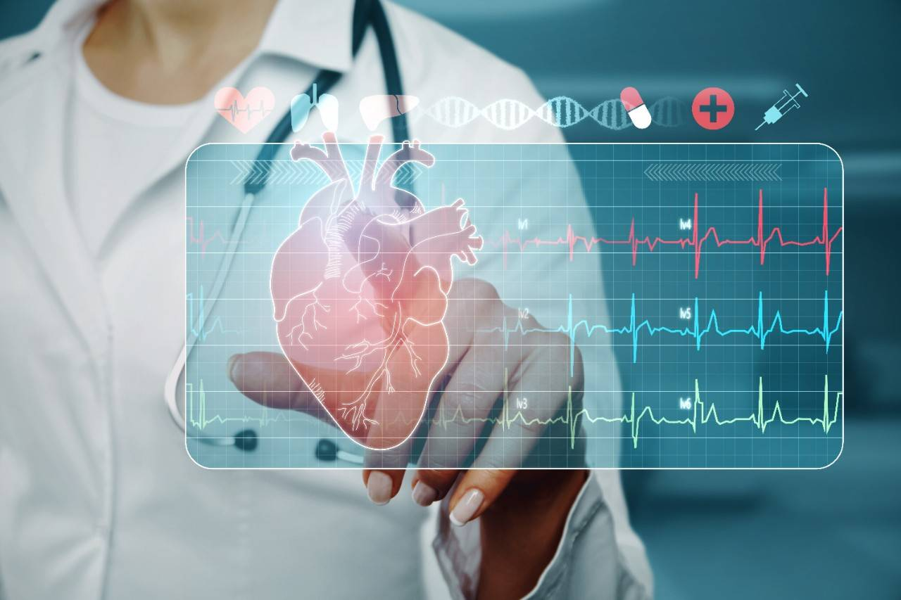
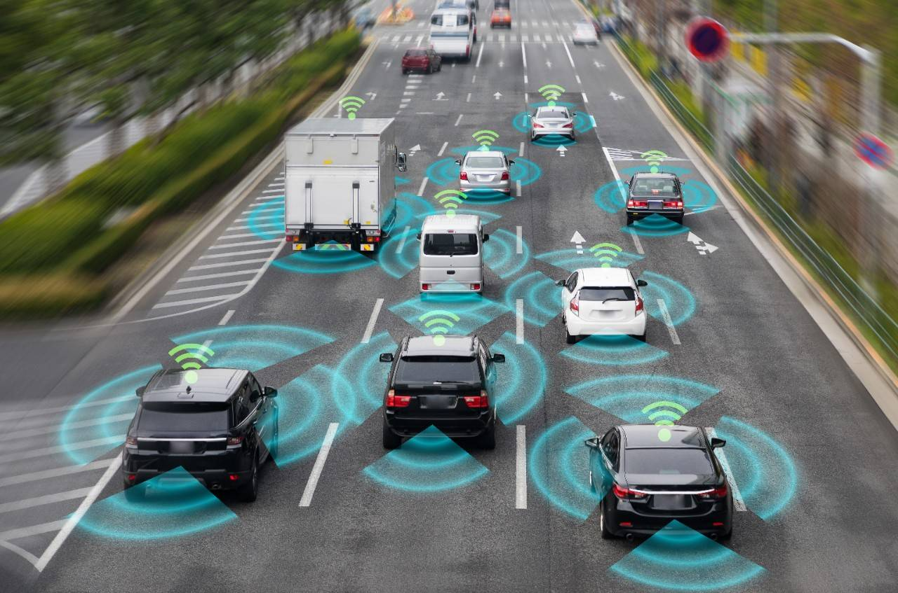

Aplicaciones
|
|  |
Inteligencia artificial en medicina
En el sector sanitario, existen chatbots capaces de analizar los síntomas
que le indicamos y emitir un diagnóstico preliminar. Asimismo, mediante el
análisis de determinados datos, es posible determinar la propensión a desarrollar
ciertas enfermedades como, por ejemplo, el cáncer de mama. Junto a los gemelos digitales,
ambas herramientas pueden incluso encontrar patrones en los pacientes o reducir el riesgo
en procedimientos sanitarios.
|
|
|
Inteligencia artificial en el sector educativo
La inteligencia artificial es capaz de realizar propuestas personalizadas
de cursos, mejorar las tutorías en línea y analizar las competencias de los
estudiantes mediante el método learning analytics a fin de conocer cuáles son
sus necesidades educativas.
|
|

|
Inteligencia artificial en el transporte y el sector energético
La aplicación de la inteligencia artificial ayuda no solo a optimizar las rutas tanto en tiempo como en
consumo energético; también permite reducir los accidentes en carretera, anticiparse a posibles problemas
al predecir la necesidad de mantenimiento del vehículo con antelación, y planificar las rutas de transporte
según la demanda y la capacidad, entre otras ventajas. Además, ya es una parte fundamental de los vehículos
eléctricos, de modo que permite gestionar y transmitir los datos entre distintos dispositivos conectados.
|
|
|
Inteligencia artificial en la banca
La inteligencia artificial permite detectar posibles fraudes (como el blanqueo de
capitales), predecir el comportamiento de los mercados y aconsejar las operaciones
y productos idóneos para cada cliente.
|
|
|
Inteligencia artificial en marketing y publicidad
Gracias a la inteligencia artificial, es posible hacer predicciones de ventas de determinados
productos y servicios, así como hacer recomendaciones personalizadas a los clientes basados en
elecciones anteriores.
|